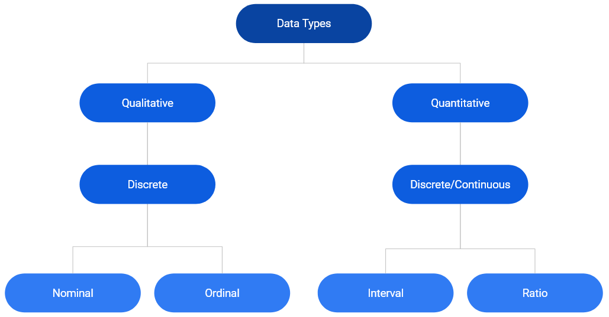
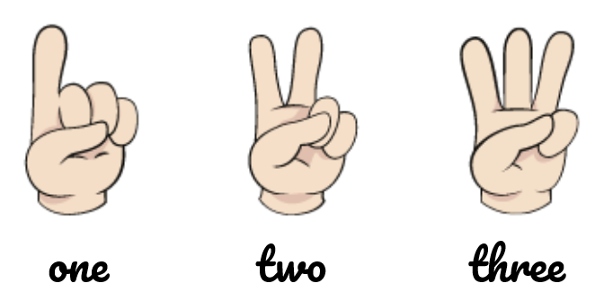
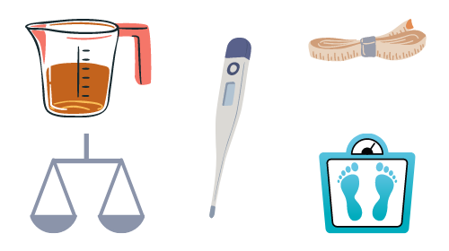
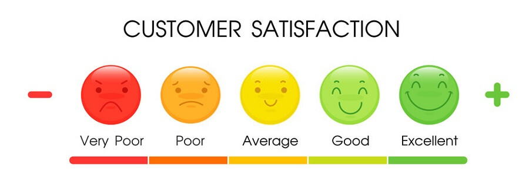
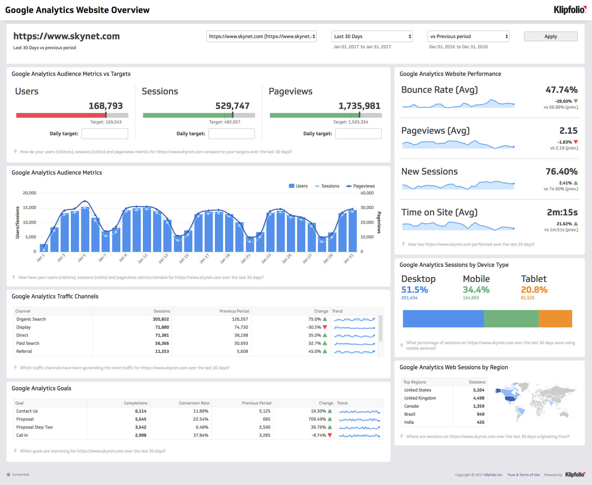
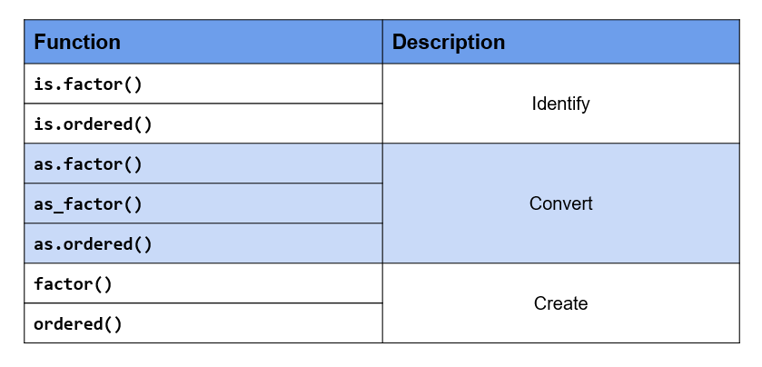
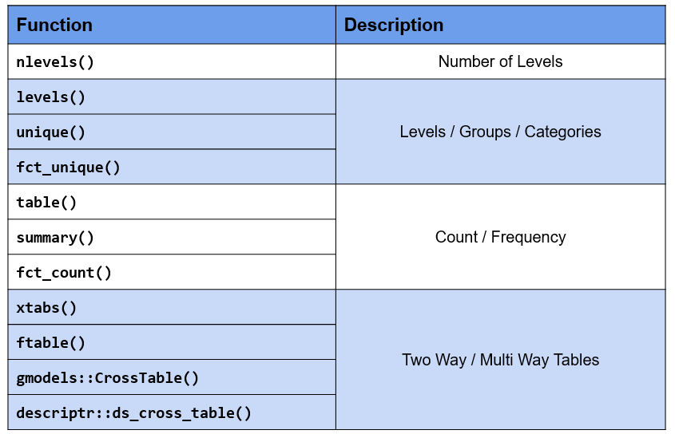

14 Categorical Data Fundamentals
15 Categorical Data Fundamentals
NoteContinued in part B
This chapter was split for readability. Reordering, recoding, lumping and visualization continue in @forcats-manipulation.
This chapter is the first of two on categorical data. Here we cover what factors are, how R stores them, frequency tabulation and base R pitfalls. @forcats-manipulation continues with reordering, recoding, lumping and ggplot2 visualization.
15.1 Introduction
Handling categorical/qualitative data is integral to data analysis. Almost every data science project involves working with categorical data and students should know how to store, summarize, visualize & manipulate such data. Working with categorical data is different from working with numbers or text. In this chapter, we will understand categorical data and explore the rich set of functions (built-in & through packages) provided by R for working with such data. The word categorical is used interchangeably with qualitative.
15.1.1 Data Types
Before we begin our deep dive on categorical data, let us get a quick overview of different data types.
In the chart above, we can see that data can be primarily classified into qualitative or quantitative. Qualitative data consists of labels or names. Quantitative data, on the other hand, consists of numbers and indicate how much or how many. This brings us to the next level of classification:
- discrete
- continuous
In the chart, we can observe that qualitative data is always discrete where as quantitative data may be discrete or continuous. Qualitative data is further classified into
- nominal
- ordinal
First, we will understand discrete and continuous data, and then proceed to explore nominal and ordinal data.
Discrete Data

Discrete data arises in situations where counting is involved. It can take on only a finite number of values and cannot be divided into smaller parts. For example, let us consider the number of students in a class. We can have 5 0r 10 students but not 5.5 students (we can’t have half a student).
Continuous Data

Continuous data arises in situations where measuring is involved. It can take any numeric value in a specified range and can be divided into smaller parts and still have meaning. Examples include money, temperature, length, volume etc.
15.1.2 Categorical Data
Since our interest is in categorical data, we will spend more time understanding the different types of categorical data through various examples. Let us begin by formally defining categorical data:
- it is always discrete
- it may be divided into groups
- consists of names or labels
- takes on limited & fixed number of possible values
- arises in situation when counting is involved
- analysis generally involves the use of data tables
15.1.3 Dichotomous
A categorical variable that can take on exactly two values is termed as binary or dichotomous variable.
15.1.4 Polychotomous
Categorical variables with more than two possible values are called polychotomous variables.
15.1.5 Ordinal

In ordinal data, the categories can be ordered or ranked. Examples include
- socio-economic status
- education level
- income level
- satisfaction rating
While we can rank the categories, we cannot assign a value to them. For example, in satisfaction ranking, we cannot say that like is twice as positive as dislike i.e. we are unable to say how much they differ from each other. While the order or rank of data is meaningful, the difference between two pieces of data cannot be measured/determined or are meaningless. Ordinal data provide information about relative comparisons, but not the magnitude of the differences.
15.1.6 Nominal
Nominal data do not have an intrinsic order and cannot be ordered or measured. Examples include
- blood group
- gender
- religion
- color
Categorical data are sometimes coded with numbers, with those numbers replacing names. Although such numbers might appear to be quantitative, they are actually categorical data. When they do take numerical values, those numbers do not have any mathematical meaning. Examples include months expressed in numbers.
15.1.7 Summary
- Data can be qualitative or quantitative.
- Qualitative data is always discrete.
- Dichotomous data consists of only 2 groups/levels.
- Polychotomous data consists of more than 2 groups/levels.
- Nominal data do not have an intrinsic order.
- In ordinal data
- categories can be ordered or ranked
- the difference between the categories cannot be determined
15.1.8 Your Turn…
- State whether the following are quantitative or qualitative
- Age
- Gender
- Annual Sales
- Weight
- Education Level
- Vehicle Type
- Height
- Ice Cream Flavor
- Job/Work Experience
- Blood Group
- Color
- Mode of Payment
- State whether the following are dichotomous or polychotomous
- Heads / Tails
- Blood Group
- Transportation Mode
- Rich / Poor
- Democrat / Republican
- Education Level
- Gender
- Pass / Fail
- Yes / No
- Positive / Negative
- State whether the following are nominal or ordinal
- STD Codes
- Prepaid / Postpaid
- Hotel Ratings
- Smart Phone Brands
- Student Grades
- Cellular Operator
- ISPs (Internet Service Providers)
- Occupation
- Bank Account Number
- Class of Travel
- Military Rank
15.2 Case Study
As is the practice, throughout this chapter, we will work on a case study related to an e-commerce firm. As most of you would already be aware, a lot of data is captured when you go on the internet by the websites you browse as well as by third party cookies. Data collected is then used to display ads as well as to feed to recommendation algorithms.
The data used in the case study represents the basic information that is captured when users visit any website. It closely resembles real world data for an e-commerce store. We will try to generate insights about the visitors to be used by an imaginary marketing team for better targeting and promotion. The case study data set can be imported using the RStudio IDE or R code.

15.2.1 Data
The data set is available in both CSV & RDS formats.
CSV
If you want to specify the data types while reading the data, use the readr package. We have explored how to import data into R in a previous chapter. We will read a subset of columns from the data set (it has 20 columns) which will cover both nominal and ordinal data types. To import the data, we will use the read_csv() function. The first input is the name of the data set, analytics.csv. Ensure that the name is enclosed in single/double quotes.
read_csv("analytics_raw.csv",
col_types = cols_only(device = col_factor(levels = c("Desktop", "Tablet", "Mobile")),
gender = col_factor(levels = c("female", "male", "NA")),
user_rating = col_factor(levels = c("1", "2", "3", "4", "5"),
ordered = TRUE)))# A tibble: 244,398 × 3
device gender user_rating
<fct> <fct> <ord>
1 Desktop female 4
2 Mobile NA 5
3 Desktop NA 4
4 Desktop NA 5
5 Desktop NA 4
6 Mobile NA 4
7 Desktop NA 4
8 Desktop NA 4
9 Desktop female 5
10 Desktop NA 4
# ℹ 244,388 more rowsSince we are specifying the column data types while importing the data, we will use the col_types argument to list out the data types. As we are reading in a subset of the columns and not all of them, we will use the cols_only() function indicating that only the columns specified must be read in and not all of them.
Categorical data and the levels/groups are specified using the col_factor() function. Use the levels argument to specify the levels/groups and the ordered argument to indicate if the data is ordinal. By default, it is set to FALSE, change this to TRUE if the column is ordinal.
RDS
The .rds file can be read using readRDS().
data <- readRDS('analytics.rds')
head(data)# A tibble: 6 × 19
device os browser user_type channel gender frequency recency page_depth
<fct> <fct> <fct> <fct> <fct> <fct> <dbl> <dbl> <dbl>
1 Desktop Windows Chrome New Visi… Organi… female 1 0 1
2 Mobile iOS Safari Returnin… Organi… <NA> 3 1 1
3 Desktop Chrome … Chrome New Visi… Direct <NA> 1 0 5
4 Desktop Macinto… Chrome Returnin… Organi… <NA> 2 0 1
5 Desktop Macinto… Chrome Returnin… Referr… <NA> 5 8 1
6 Mobile Android Chrome New Visi… Organi… <NA> 1 0 5
# ℹ 10 more variables: hour_of_day <chr>, age <dbl>, duration <dbl>,
# landing_page <fct>, exit_page <fct>, country <fct>, quantity <dbl>,
# revenue <dbl>, purchase_flag <lgl>, user_rating <dbl>15.2.2 Data Dictionary
| Column | Description |
|---|---|
| device | Device used to browse the website |
| os | Operating system of the device |
| browser | Browser used to visit the website |
| user_type | New or returning visitor |
| channel | Source of traffic |
| gender | Gender of the visitor |
| frequency | Count of visits to the website |
| recency | Number of days since last visit |
| page_depth | Number of website pages browsed |
| hour_of_day | Hour of day |
| age | Age of the visitor |
| duration | Time spent on the website (in seconds) |
| landing_page | Page on which visitor landed |
| exit_page | Page on which visitor exited |
| country | Country of origin |
| city | City of the visitor |
| quantity | Number of units purchased |
| revenue | Total revenue |
| purchase_flag | Whether the visitor checked out? |
| user_rating | Website UI rating given by visitor |
15.3 Factors
In this very important section, we will learn how R
- stores categorical data
- checks if given data is categorical
- converts other data types to factor
- handles missing values in categorical data
- specifies the orders of the categories/levels
- stores ordinal data
15.3.1 Introduction
In R, categorical data is stored as factor. Before we explore the factor family of functions, let us generate the sample data we will use in this module. We will generate the device column from the case study data set using the sample() function. We provide the following inputs to generate the data:
- values from which the data must be generated
- the size of the sample
- indicate if the values must be repeated (TRUE/FALSE)
device <- sample(c("Desktop", "Mobile", "Tablet"), size = 25, replace = TRUE)
device [1] "Desktop" "Desktop" "Mobile" "Mobile" "Desktop" "Mobile" "Tablet"
[8] "Desktop" "Mobile" "Tablet" "Mobile" "Desktop" "Tablet" "Mobile"
[15] "Desktop" "Mobile" "Mobile" "Mobile" "Mobile" "Desktop" "Desktop"
[22] "Tablet" "Mobile" "Tablet" "Mobile" 15.3.2 Membership Testing
Great! We have successfully generated the sample data and along the way learnt a new R function for sampling. First, let us check if the sample is a factor using the membership function is.factor().
is.factor(device)[1] FALSEMembership testing functions always have the prefix is_ and return only logical values. If the object is a member of the specified class, they return TRUE else FALSE. Since our sample data is not stored as a factor, R has returned FALSE.
15.3.3 Coercion
Let us try to coerce it into factor using the coercion function as.factor().
as.factor(device) [1] Desktop Desktop Mobile Mobile Desktop Mobile Tablet Desktop Mobile
[10] Tablet Mobile Desktop Tablet Mobile Desktop Mobile Mobile Mobile
[19] Mobile Desktop Desktop Tablet Mobile Tablet Mobile
Levels: Desktop Mobile TabletDo you spot any difference in the output? In the last line, it displays the levels or categories of the variable. Don’t worry if you didn’t spot it. We are just getting started and you will pick it up by the end of this section. Another function that can be used to coerce data into factor is as_factor() from the forcats package.
as_factor(device) [1] Desktop Desktop Mobile Mobile Desktop Mobile Tablet Desktop Mobile
[10] Tablet Mobile Desktop Tablet Mobile Desktop Mobile Mobile Mobile
[19] Mobile Desktop Desktop Tablet Mobile Tablet Mobile
Levels: Desktop Mobile TabletDid you notice any difference between these two functions? Focus on the last line of the output where the levels are displayed. Now observe the order of the levels. as.factor() displays levels in the alphabetical order whereas as_factor() displays them in order of appearance in the data. Mobile, followed by Tablet, and then Desktop. If you look at the data, they appear in the same order.
15.3.4 Factor Function
If you want finer control while creating factors, use the factor() function. as.factor() should suffice in most cases but use factor() when you want to:
- specify levels
- modify labels
- include
NAas a level/category - create ordered factors
- specify order of levels
The first input is a vector, usually a numeric or character vector with a small number of unique values. In our example, it is a character vector of length 25 (i.e. 25 values) but 3 unique values.
factor(device) [1] Desktop Desktop Mobile Mobile Desktop Mobile Tablet Desktop Mobile
[10] Tablet Mobile Desktop Tablet Mobile Desktop Mobile Mobile Mobile
[19] Mobile Desktop Desktop Tablet Mobile Tablet Mobile
Levels: Desktop Mobile TabletIf you want to specify the levels or categories, use the levels argument.
factor(device, levels = c("Desktop", "Mobile", "Tablet")) [1] Desktop Desktop Mobile Mobile Desktop Mobile Tablet Desktop Mobile
[10] Tablet Mobile Desktop Tablet Mobile Desktop Mobile Mobile Mobile
[19] Mobile Desktop Desktop Tablet Mobile Tablet Mobile
Levels: Desktop Mobile TabletLevels not specified will be replaced by NA. Let us specify only Desktop and Mobile as the levels in the device column and see what happens.
factor(device, levels = c("Desktop", "Mobile")) [1] Desktop Desktop Mobile Mobile Desktop Mobile <NA> Desktop Mobile
[10] <NA> Mobile Desktop <NA> Mobile Desktop Mobile Mobile Mobile
[19] Mobile Desktop Desktop <NA> Mobile <NA> Mobile
Levels: Desktop MobileAs you can see, Tablet has been replaced by NA.
15.3.5 Modify Labels
You can change the labels of the levels using the labels argument. The labels must be in the same order as the levels. We will modify the labels to Desk, Mob & Tab for Desktop, Mobile & Tablet respectively.
factor(device,
levels = c("Desktop", "Mobile", "Tablet"),
labels = c("Desk", "Mob", "Tab")) [1] Desk Desk Mob Mob Desk Mob Tab Desk Mob Tab Mob Desk Tab Mob Desk
[16] Mob Mob Mob Mob Desk Desk Tab Mob Tab Mob
Levels: Desk Mob TabYou can see that not only the values but the levels are also modified.
15.3.6 Missing Values
Let us regenerate the device column but include some missing values (NA) deliberately to see how factor() handles them.
# sample with missing values
device <- sample(c("Desktop", "Mobile", "Tablet", NA), size = 25, replace = TRUE)
device [1] "Tablet" "Tablet" NA "Mobile" "Tablet" "Mobile" NA
[8] NA "Tablet" "Tablet" "Mobile" "Mobile" NA "Tablet"
[15] "Desktop" "Tablet" "Mobile" NA "Tablet" NA "Desktop"
[22] "Mobile" NA "Desktop" "Mobile" # store as categorical data
factor(device) [1] Tablet Tablet <NA> Mobile Tablet Mobile <NA> <NA> Tablet
[10] Tablet Mobile Mobile <NA> Tablet Desktop Tablet Mobile <NA>
[19] Tablet <NA> Desktop Mobile <NA> Desktop Mobile
Levels: Desktop Mobile TabletNA is not shown as one of the levels. Why does this happen? By default, it will ignore them. If you look at the arguments of the factor() function, the exclude argument is set to NA by default i.e. NA is excluded automatically. What should we do to ensure that NA is also treated as a level? In order to treat NA as a level, set the exclude argument to NULL.
factor(device, exclude = NULL) [1] Tablet Tablet <NA> Mobile Tablet Mobile <NA> <NA> Tablet
[10] Tablet Mobile Mobile <NA> Tablet Desktop Tablet Mobile <NA>
[19] Tablet <NA> Desktop Mobile <NA> Desktop Mobile
Levels: Desktop Mobile Tablet <NA>As you can see, NA is displayed as one of the levels in the data.
15.3.7 Ordered Factors
So far, we have been looking at nominal data. Let us now explore how R handles ordered data. We will generate a new data set of satisfaction ratings to use in this section. Satisfaction ratings are widely used to measure a customer’s satisfaction with an organization, service or a product.
rating <- sample(c("Dislike", "Neutral", "Like"), size = 25, replace = TRUE)
rating [1] "Neutral" "Neutral" "Dislike" "Dislike" "Like" "Dislike" "Neutral"
[8] "Dislike" "Like" "Neutral" "Dislike" "Dislike" "Neutral" "Dislike"
[15] "Dislike" "Dislike" "Neutral" "Neutral" "Neutral" "Neutral" "Neutral"
[22] "Dislike" "Like" "Neutral" "Neutral"It consists of three values Dislike, Neutral & Like in that order. You can see that there is an intrinsic order here. Like is better than neutral which in turn is better than dislike. While we can order them, we can’t quantify the difference between them. We can’t say neutral is so many times better than dislike.
Membership Testing
As we did earlier, let us check if the data is ordered using the membership function is.ordered().
is.ordered(rating)[1] FALSER returns FALSE as the variable rating is not ordered. Let us use as.ordered() to coerce it into an ordered factor.
as.ordered(rating) [1] Neutral Neutral Dislike Dislike Like Dislike Neutral Dislike Like
[10] Neutral Dislike Dislike Neutral Dislike Dislike Dislike Neutral Neutral
[19] Neutral Neutral Neutral Dislike Like Neutral Neutral
Levels: Dislike < Like < NeutralLook at the last line where the levels are displayed. In case of ordered factors, you will see a < between the labels. This is used to indicate the order of the levels. Now rating is both an ordered but the order of the levels is not correct. It should be Dislike < Neutral < Like but is displayed in order of appearance in the data. Let us use the factor() function since we need more control over how the levels are ranked and set the ordered argument to TRUE.
factor(rating, ordered = TRUE) [1] Neutral Neutral Dislike Dislike Like Dislike Neutral Dislike Like
[10] Neutral Dislike Dislike Neutral Dislike Dislike Dislike Neutral Neutral
[19] Neutral Neutral Neutral Dislike Like Neutral Neutral
Levels: Dislike < Like < NeutralThe ranking of the levels has not changed and is still the same. Why is this happening? If you observe carefully, the ranking follows the alphabetical order (Desktop, Mobile, Table). The factor() function uses the same order for the levels.
15.3.8 Modify Order of Levels
To change the order/ranking of the levels, we need to specify it using the levels argument. Let us do that in the next example.
factor(rating, levels = c("Dislike", "Neutral", "Like"), ordered = TRUE) [1] Neutral Neutral Dislike Dislike Like Dislike Neutral Dislike Like
[10] Neutral Dislike Dislike Neutral Dislike Dislike Dislike Neutral Neutral
[19] Neutral Neutral Neutral Dislike Like Neutral Neutral
Levels: Dislike < Neutral < LikeNow, you can see that the levels are ranked correctly. The ordered() function can also be used to create ordered factors. Let us recreate the previous example using the ordered() function.
ordered(rating, levels = c("Dislike", "Neutral", "Like")) [1] Neutral Neutral Dislike Dislike Like Dislike Neutral Dislike Like
[10] Neutral Dislike Dislike Neutral Dislike Dislike Dislike Neutral Neutral
[19] Neutral Neutral Neutral Dislike Like Neutral Neutral
Levels: Dislike < Neutral < LikeYou can specify levels, modify labels and handle missing values using the ordered() function as well.
15.3.9 Key Functions

15.3.10 Summary
- R uses factor to handle categorical data.
- Use
as.factor()oras_factor()to coerce other data types to factor. - Use
is.factor()oris.ordered()to identify factor & ordered factor respectively. - Use
factor()to- specify labels
- modify labels
- handle missing data
- create ordered factors
- specify order of levels
- Use
ordered()to create ordered factors.
15.3.11 Your Turn…
Use analytics_raw.rds data set to answer the below questions.
Check whether the below variables are factor
devicepage_depthlanding_page
Coerce the following variables to type factor
deviceosbrowseruser_typechannelgenderlanding_pageexit_pagecitycountryuser_type
Use only the following levels in the
gendercolumn:malefemale
Include
NAas a level in the gender column.Change label of
NAtomissingin thegendercolumn.Change the labels of the levels in
user_typecolumn toNewReturning
Check if the
user_ratingcolumn is ordered. If not, coerce it to type ordered factor.
15.4 Summarize
15.4.1 Introduction
Categorical data cannot be summarized in the same way as numeric data. It does not make sense to look at range, standard deviation etc. since data consists of a few distinct values only. So how do we summarize such data? We can look at
- count/frequency
- proportion
- cumulative frequency
- cross table
- contingency table etc.
In this section, we will explore the above ways of summarizing categorical data. We will also spend some time learning about tables as you will be using them extensively while working with categorical data. R has many packages for tabulating data and we list and explore all of them in the last section of this chapter.
15.4.2 Number of Categories
From our case study, we want to know the number of devices used to browse the website, the name of the devices and the proportion of traffic they drive to our website. Let us begin with the number of devices. To view the number of groups/categories in a categorical variable, use nlevels().
nlevels(data$device)[1] 3There are 3 categories of devices used by the visitors to browse the website. This can also be used for data sanitization i.e. as an analyst you know that there are only 3 valid categories of device into which any visitor can be classified into. If you see more than 3 categories, you might want to check if there are any issues in data collection or processing. Now that we know there are 3 categories of devices, let us check if they are valid. The levels() function will return the labels of the groups.
15.4.3 Category Names
Knowing the number of levels is useful but not sufficient. levels() is one of the most useful functions when it comes to dealing with categorical data.
levels(data$device)[1] "Desktop" "Mobile" "Tablet" Other functions that you can use include unique() and fct_unique(). Both these functions will return the unique names/labels along with the levels while levels() returns the labels of the levels.
unique(data$device)[1] Desktop Mobile Tablet
Levels: Desktop Mobile Tabletfct_unique(data$device)[1] Desktop Mobile Tablet
Levels: Desktop Mobile Tablet15.4.4 Names & Counts
So we have checked the number of devices and their names. Let us now examine their distribution i.e. count/frequency. table() and summary() will display the levels and their counts while fct_count() will return a tibble with 2 columns (level & count). It is extremely useful for further data processing or visualization (using ggplot2).
table(data$device)
Desktop Mobile Tablet
177282 63482 3634 fct_count(data$device)# A tibble: 3 × 2
f n
<fct> <int>
1 Desktop 177282
2 Mobile 63482
3 Tablet 3634summary(data$device)Desktop Mobile Tablet
177282 63482 3634 15.4.5 Tables
In the previous section, we used the table() function to tabulate categorical data. We will recreate the tabulation for device and store it in a new variable tab.
tab <- table(data$device)
tab
Desktop Mobile Tablet
177282 63482 3634 What does this function return? It is not a vector, list, data.frame or matrix. Let us use the class() function to check the class of the object returned by table(). It returns an object of the class table. This is a new type of object. Let us spend some time understanding tables as they are useful for organizing and summarizing categorical data. table is also the most used object when it comes to dealing with categorical data.
The table() function returns the counts of the categories but let us say we want to view the proportion or percentage instead of counts i.e. the proportion or percentage of traffic driven to our website by the different devices. The proportions() or prop.table() function comes in handy in such cases. It takes a table object as input (tab in our case).
prop.table(tab)
Desktop Mobile Tablet
0.72538237 0.25974844 0.01486919 proportions(tab)
Desktop Mobile Tablet
0.72538237 0.25974844 0.01486919 To get the percentages, multiply the output by 100. Use the round() function to round the decimal places according to your requirements.
proportions(tab) * 100
Desktop Mobile Tablet
72.538237 25.974844 1.486919 round(proportions(tab) * 100, 2)
Desktop Mobile Tablet
72.54 25.97 1.49 So far, we have used table() to tabulate a single categorical variable. It can be used for a lot more than just tabulating data. We can examine the relationship between two categorical variables as well as create multidimensional tables. Let us look at the relationship between gender and device in our case study. Does gender affect the type of device used? To answer this, we will create a two way or cross table. In the table() function, we can specify multiple variables by separating them with a comma.
tab2 <- table(data$gender, data$device)
tab2
Desktop Mobile Tablet
female 32803 7268 494
male 46418 14503 696
<NA> 98061 41711 2444Keep in mind that the order of the variables matter. Rows represent the first variable while column represents the second.
table(data$device, data$gender)
female male <NA>
Desktop 32803 46418 98061
Mobile 7268 14503 41711
Tablet 494 696 2444The proportions() function works with two way tables as well.
proportions(tab2)
Desktop Mobile Tablet
female 0.134219593 0.029738378 0.002021293
male 0.189927904 0.059341729 0.002847814
<NA> 0.401234871 0.170668336 0.010000082proportions(tab2) * 100
Desktop Mobile Tablet
female 13.4219593 2.9738378 0.2021293
male 18.9927904 5.9341729 0.2847814
<NA> 40.1234871 17.0668336 1.0000082We would like to introduce another function at this point of time, margin.table(). What does this function do? It computes the marginal frequencies i.e. the sum of the rows or columns. It takes a table object as input. The margin argument allows us to specify whether we want the sum of rows or columns. 1 indicates rows and 2 indicates columns.
margin.table(tab2, 1) # sum of rows
female male <NA>
40565 61617 142216 margin.table(tab2, 2) # sum of columns
Desktop Mobile Tablet
177282 63482 3634 If the margin argument is NULL (which it is by default), the function returns the sum of all cells of the table.
margin.table(tab2)[1] 244398table() does not display row or column labels. It does display the group labels though. Let us revisit the output from tab2. You can observe that while it includes the group labels, the row and column labels are missing. The output from the dimnames() function shows the group labels of the variables but the row & column labels are absent.
dimnames(tab2)[[1]]
[1] "female" "male" NA
[[2]]
[1] "Desktop" "Mobile" "Tablet" names(tab2)NULLnames(dimnames(tab2)) [1] "" ""The output from names(dimnames(tab2)) is also empty. Let us add the variable names as the row & column labels to tab2.
names(dimnames(tab2)) <- c("Gender", "Device")
tab2 Device
Gender Desktop Mobile Tablet
female 32803 7268 494
male 46418 14503 696
<NA> 98061 41711 2444Now look at the output from tab2 and you can observe the difference. The same is also visible when we run dimnames(tab2).
dimnames(tab2)$Gender
[1] "female" "male" NA
$Device
[1] "Desktop" "Mobile" "Tablet" To add margin totals to the table, use addmargins(). Like proportions() and margin.table(), it also takes a table object as the input.
addmargins(tab2) Device
Gender Desktop Mobile Tablet Sum
female 32803 7268 494 40565
male 46418 14503 696 61617
<NA> 98061 41711 2444 142216
Sum 177282 63482 3634 244398rowSums() returns the row total while colSums() returns the column total. They are similar to margin.table().
rowSums(tab2)female male <NA>
40565 61617 142216 colSums(tab2)Desktop Mobile Tablet
177282 63482 3634 xtabs() is another way of creating multidimensional tables in R. In comparison to table(), it
- uses
formulanotation for input - the data argument ensures variable names are referenced instead of using $ i.e.
data$variable - displays row & column labels by default
tabx <- xtabs(~gender+device, data = data)
tabx device
gender Desktop Mobile Tablet
female 32803 7268 494
male 46418 14503 696
<NA> 98061 41711 2444The following functions work with xtabs() as well
proportions()margin.table()addmargins()
proportions(tabx) device
gender Desktop Mobile Tablet
female 0.134219593 0.029738378 0.002021293
male 0.189927904 0.059341729 0.002847814
<NA> 0.401234871 0.170668336 0.010000082margin.table(tabx, 1)gender
female male <NA>
40565 61617 142216 margin.table(tabx, 2)device
Desktop Mobile Tablet
177282 63482 3634 addmargins(tabx) device
gender Desktop Mobile Tablet Sum
female 32803 7268 494 40565
male 46418 14503 696 61617
<NA> 98061 41711 2444 142216
Sum 177282 63482 3634 244398So far, we have been working with one or two dimensional tables. Both the table() and xtabs() functions are capable of creating multidimensional tables. Keep in mind that multidimensional tables are complex and it becomes increasingly difficult to understand or interpret them.
tab3 <- xtabs(~gender+device+channel, data = data)
tab3, , channel = (Other)
device
gender Desktop Mobile Tablet
female 786 258 0
male 1063 507 19
<NA> 2173 1186 81
, , channel = Affiliates
device
gender Desktop Mobile Tablet
female 1314 60 0
male 1714 169 0
<NA> 3518 548 65
, , channel = Direct
device
gender Desktop Mobile Tablet
female 4785 977 59
male 7010 2381 95
<NA> 15824 8292 430
, , channel = Display
device
gender Desktop Mobile Tablet
female 123 753 104
male 210 491 73
<NA> 554 911 156
, , channel = Organic Search
device
gender Desktop Mobile Tablet
female 17109 4480 282
male 25016 9563 448
<NA> 54071 27223 1476
, , channel = Paid Search
device
gender Desktop Mobile Tablet
female 645 230 22
male 887 478 26
<NA> 1274 782 51
, , channel = Referral
device
gender Desktop Mobile Tablet
female 7387 74 0
male 9251 185 0
<NA> 18052 615 51
, , channel = Social
device
gender Desktop Mobile Tablet
female 654 436 27
male 1267 729 35
<NA> 2595 2154 134ftable stands for flat tables and is useful for printing attractive tables. It makes it easy to read and interpret multidimensional tables. In the next example, we will use ftable() to print the tables we have created in the previous examples and compare the outputs.
ftable(tabx) device Desktop Mobile Tablet
gender
female 32803 7268 494
male 46418 14503 696
NA 98061 41711 2444ftable(tab2) Device Desktop Mobile Tablet
Gender
female 32803 7268 494
male 46418 14503 696
NA 98061 41711 2444ftable(tab3) channel (Other) Affiliates Direct Display Organic Search Paid Search Referral Social
gender device
female Desktop 786 1314 4785 123 17109 645 7387 654
Mobile 258 60 977 753 4480 230 74 436
Tablet 0 0 59 104 282 22 0 27
male Desktop 1063 1714 7010 210 25016 887 9251 1267
Mobile 507 169 2381 491 9563 478 185 729
Tablet 19 0 95 73 448 26 0 35
NA Desktop 2173 3518 15824 554 54071 1274 18052 2595
Mobile 1186 548 8292 911 27223 782 615 2154
Tablet 81 65 430 156 1476 51 51 134By default, missing values (NAs) are excluded from tables. Let us modify the gender data from our case study a bit and see how the table() function deals with missing values. We won’t explicitly specify NA as a level while recreating the gender data.
gen <- as.factor(as.character(data$gender))
table(gen)gen
female male
40565 61617 As you can see, table() excludes missing values while tabulating the data. In order to ensure that missing values are also counted, we can use the useNA argument. It can take two values:
- ifany
- always
In the first case, it will show NA as a level and the count only if there are missing values in the data. In the second case, it will always show NA as a level irrespective of whether there are missing values in the data or not.
table(gen, useNA = "ifany")gen
female male <NA>
40565 61617 142216 table(data$device, useNA = "always")
Desktop Mobile Tablet <NA>
177282 63482 3634 0 In this final section on tables, we will learn how to select/access the different parts of a table. We will use [ operator to select rows and columns of a table (it is similar to selecting data from a data.frame). Below are a few examples:
- select first row
tab2[1, ] Desktop Mobile Tablet
32803 7268 494 - select first column
tab2[, 1] female male <NA>
32803 46418 98061 - select first two rows
tab2[1:2, ] Device
Gender Desktop Mobile Tablet
female 32803 7268 494
male 46418 14503 696- select first two columns
tab2[, 1:2] Device
Gender Desktop Mobile
female 32803 7268
male 46418 14503
<NA> 98061 41711- select nth row
tab2[2, ] Desktop Mobile Tablet
46418 14503 696 - select nth column
tab2[, 2] female male <NA>
7268 14503 41711 - select row by group label
tab2["female", ] Desktop Mobile Tablet
32803 7268 494 - select column by group label
tab2[, "Mobile"] female male <NA>
7268 14503 41711 Before we end this section, let us learn how to test if an object is of class table using is.table().
is.table(tab2)[1] TRUENext, we will look at different R packages for two way/contingency tables.
15.4.6 Contingency Table
For cross tables with output similar to SAS or SPSS, use any of the below:
gmodels::CrossTable(data$device, data$gender)
Cell Contents
|-------------------------|
| N |
| Chi-square contribution |
| N / Row Total |
| N / Col Total |
| N / Table Total |
|-------------------------|
Total Observations in Table: 102182
| data$gender
data$device | female | male | Row Total |
-------------|-----------|-----------|-----------|
Desktop | 32803 | 46418 | 79221 |
| 58.228 | 38.334 | |
| 0.414 | 0.586 | 0.775 |
| 0.809 | 0.753 | |
| 0.321 | 0.454 | |
-------------|-----------|-----------|-----------|
Mobile | 7268 | 14503 | 21771 |
| 218.694 | 143.975 | |
| 0.334 | 0.666 | 0.213 |
| 0.179 | 0.235 | |
| 0.071 | 0.142 | |
-------------|-----------|-----------|-----------|
Tablet | 494 | 696 | 1190 |
| 0.986 | 0.649 | |
| 0.415 | 0.585 | 0.012 |
| 0.012 | 0.011 | |
| 0.005 | 0.007 | |
-------------|-----------|-----------|-----------|
Column Total | 40565 | 61617 | 102182 |
| 0.397 | 0.603 | |
-------------|-----------|-----------|-----------|
descriptr::ds_cross_table(data, device, gender) Cell Contents
|---------------|
| Frequency |
| Percent |
| Row Pct |
| Col Pct |
|---------------|
Total Observations: 244398
----------------------------------------------------------------------------
| | gender |
----------------------------------------------------------------------------
| device | female | male | NA | Row Total |
----------------------------------------------------------------------------
| Desktop | 32803 | 46418 | 98061 | 177282 |
| | 0.134 | 0.19 | 0.401 | |
| | 0.19 | 0.26 | 0.55 | 0.73 |
| | 0.81 | 0.75 | 0.69 | |
----------------------------------------------------------------------------
| Mobile | 7268 | 14503 | 41711 | 63482 |
| | 0.03 | 0.059 | 0.171 | |
| | 0.11 | 0.23 | 0.66 | 0.26 |
| | 0.18 | 0.24 | 0.29 | |
----------------------------------------------------------------------------
| Tablet | 494 | 696 | 2444 | 3634 |
| | 0.002 | 0.003 | 0.01 | |
| | 0.14 | 0.19 | 0.67 | 0.01 |
| | 0.01 | 0.01 | 0.02 | |
----------------------------------------------------------------------------
| Column Total | 40565 | 61617 | 142216 | 244398 |
| | 0.166 | 0.252 | 0.582 | |
----------------------------------------------------------------------------We list and explore different R packages for summarizing categorical data in the last section of this chapter.
15.4.7 Key Functions

15.4.8 Your Turn…
Display the number of levels in
browserchannellanding_pageexit_page
Display the categories in
oschannelbrowsergenderuser_type
Display the count/frequency of
channeluser_type
Examine the distribution of the following and summarize your observations:
channelbyuser_typedevicebypurchase_flagchannelbydevicechannelbypurchase_flaguser_typebypurchase_flag